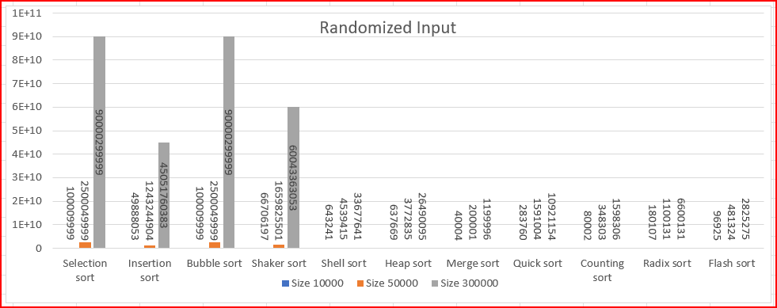
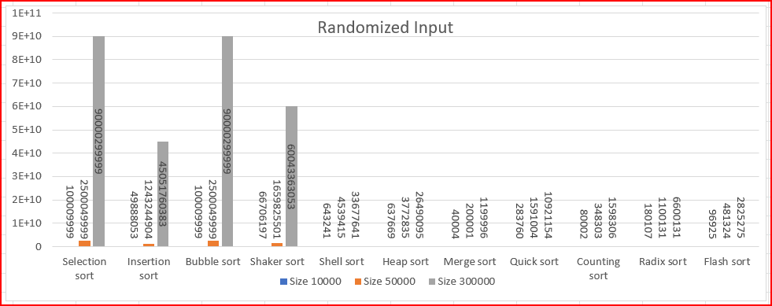
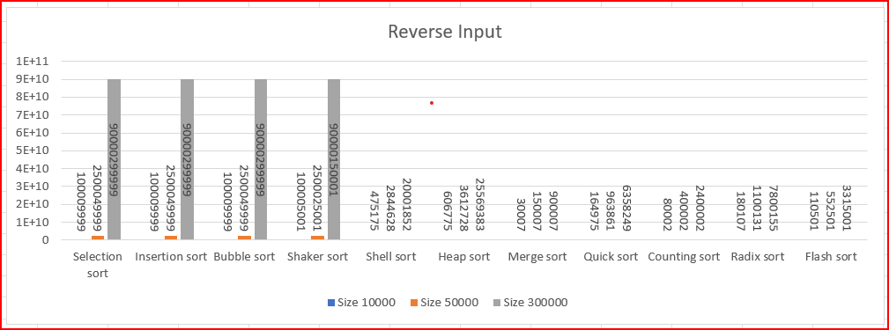
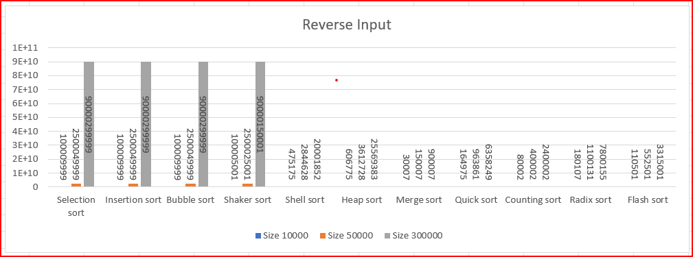

ĐẠI HỌC QUỐC GIA THÀNH PHỐ HỒ CHÍ MINH
TRƯỜNG ĐẠI HỌC KHOA HỌC TỰ NHIÊN
KHOA CÔNG NGHỆ THÔNG TIN

BÁO CÁO THỰC HÀNH
MÔN HỌC: CẤU TRÚC DỮ LIỆU VÀ GIẢI THUẬT
CHỦ ĐỀ: TÌM HIỂU VÀ THỰC HÀNH CÁC THUẬT TOÁN SẮP XẾP
💕 Giảng viên hướng dẫn: Thầy Lê Đình Ngọc 💕
21120499 - Nguyễn Duy Long
21120504 - Nguyễn Phương Nam
21120505 - Bùi Thị Thanh Ngân
21120521 - Nguyễn Phúc Phát
Mẹo: click vào nút ⬆️ góc phải trang để đến trang mục lục nhanh nhất nhé 😉
Trong bài báo cáo này, chúng em sẽ trình bày về 11 thuật toán sắp xếp được nêu ra trong lab03. Cụ thể, chúng em sẽ trình bày về các thuật toán sắp xếp sau:
1. Insertion Sort 5. Heap Sort 9. Counting Sort
2. Selection Sort 6. Merge Sort 10. Radix Sort
3. Bubble Sort 7. Shell Sort 11. Flash Sort
4. Quick Sort 8. Shaker Sort
Bài báo cáo này có mục tiêu nhằm giúp người đọc hiểu rõ hơn về các thuật toán sắp xếp, cách thức hoạt động của chúng, các ưu, nhược điểm của chúng. Đồng thời, bài báo cáo cũng giúp người đọc hiểu rõ hơn về cách thức thực hiện các thuật toán sắp xếp, cách thức thực hiện các thí nghiệm để đánh giá hiệu suất của chúng và cái nhìn tổng quan hơn về độ phức tạp và hiệu suất của các thuật toán qua việc so sánh chúng với nhau thông qua các biểu đồ cụ thể.
Phần 1 – Trình bày các thuật toán sắp xếp: ý tưởng, mã giả, độ phức tạp và những biến thể - cải tiến (nếu có)
Phần 2 – Kết quả thực nghiệm: thống kê các số liệu thu được thông qua việc thực thi chương trình với các dữ liệu đầu vào khác nhau, so sánh với nhau và đưa ra nhận xét.
Phần 3 – Tổ chức mã nguồn: trình bày tổng quan cách thức tổ chức các file chương trình và những thư viện, cấu trúc dữ liệu được sử dụng.
Phần 4 – Tài liệu tham khảo: Các tài liệu tham khảo được sử dụng trong quá trình tìm hiểu.
command 1: running a sorting algorithm on the given input data
prototype: [Execution file] -a [Algorithm] [Given input] [Output params]
Example: a.exe -a radix-sort input.txt -both
command 2: Run a sorting algorithm on the data generated automatically with specified size and order
prototype; [Execution file] -a [Algorithm] [Input size] [Input order] [output params]
Example: a.exe -a selection-sort 50 -rand -time
command 3: Run a sorting algorithm on ALL data arrangements of a specified size.
prototype: [Execution file] -a [Algorithm] [Input size] [Output params]
Example: a.exe -a binary-insertion-sort 7000 -comp
command 4: Run two sorting algorithms on the given input.
prototype: [Execution file ] -c [Algorithm 1] [Algorithm 2] [Given input]
Example: a.exe -c heap-sort merge-sort input.txt
command 5: Run two sorting algorithms on the data generated automatically.
prototype: [Execution file] -c [Algorithm 1] [Algorithm 2] [Input size] [Input order]
Example: a.exe -c quick-sort merge-sort 100000 -nsorted
1st line : an interger n, the number of elements in the array
2nd line: n integers, the elements of the array, separated by a single space
-time: running time | -rand: | 10 000, 30 000
-comp: number of comparisons | -sorted: | 50 000, 100 000
-both | -nsorted: | 300 000, 500 000
| -rev: |
Dưới đây là 11 thuật toán sắp xếp được đề cập đến ở lab03 được các thành viên nhóm tìm hiểu và trình bày:
Mỗi bước sẽ di chuyển một phần tử nhỏ nhất sang bên trái, từ đó mảng sẽ dần được chia làm 2 phần:
Bên trái là mảng đã được sắp xếp tăng dần.
Bên phải là mảng chưa được sắp xếp.
For i = 0 to n – 2
min_index = chỉ số phẩn tử nhỏ nhất trong khoảng i + 1 đến n – 1
swap (a(i), a(min_index))
Không gian: O(1)
Thời gian: O(n^2) cho mọi trường hợp.
Heap sort sử dụng cùng ý tưởng tìm các giá trị lớn nhất nhỏ nhất, nhỏ nhất nhưng dùng đến cấu trúc heap nên độ phức tạp giảm còn O(nlogn).
Double selection sort, tìm cùng lúc giá trị lớn nhất và nhỏ nhất sau đó di chuyển các giá trị này đến đầu và cuối mảng.
1. Chèn phần tử thứ hai vào vị trí thích hợp trong mảng con đã được sắp xếp.
2. Chèn phần tử thứ ba vào vị trí thích hợp trong mảng con đã được sắp xếp.
3. Lặp lại cho đến khi chèn phần tử cuối cùng vào vị trí thích hợp trong mảng con đã được sắp xếp.
for i = 1 to n - 1
x = a[i]
j = i - 1
Duyệt j và tìm vị trí thích hợp cho x, đồng thời dịch các phần tử sang phải để tạo chỗ cho x
Chèn x vào vị trí thích hợp
Không gian: O(1)
Thời gian:
- Trung bình, thuật toán có độ phức tạp là O(n^2)
- Trường hợp tốt nhất là với đầu vào đã được sắp xếp đúng thứ tự : O(n)
- Trường hợp xấu là dãy bị đảo ngược thứ tự hoàn toàn : O(n^2)
Shell sort sử dụng cùng ý tưởng tìm các giá trị lớn nhất nhỏ nhất.
Áp dụng trong flash sort.
Có thể dùng binary search để giảm số lần so sánh.
1. So sánh 2 phần tử liền kề, nếu phần tử đứng trước lớn hơn phần tử đứng sau thì hoán đổi chỗ 2 phần tử này.
2. Lặp lại cho đến khi không còn phần tử nào cần hoán đổi chỗ.
for i = 0 to n - 2
for j = n - 1 downTo i + 1
if a[j] < a[j - 1]
swap (a[j], a[j - 1])
Không gian: O(1)
Thời gian: Với thuật toán trên thì độ phức tạp luôn là O(n^2)
- Cải tiến:
Trong mỗi vòng lặp của biến j ở trên, kiểm tra xem nếu không có phép hoán vị nào được thực hiện tức mảng đã đúng vị trí ta sẽ dừng thuật toán ngay lập tức. Khi đó, trong trường hợp tốt nhất mảng đã được sắp xếp độ phức tạp về thời gian là O(n)
- Biến thể là Shaker Sort.
1. Chọn khoảng xét từ đầu đến cuối mảng
2. Thực hiện duyệt khoảng xét bằng 2 lượt, so sánh 2 phần tử liền kề và hoán vị:(Lượt đi: đẩy phần tử lớn nhất về cuối; Lượt về: đẩy phần tử nhỏ nhất về đầu)
3. Đồng thời, mỗi lượt đi ghi nhận lại vị trí hoán vị cuối cùng, để thu hẹp 2 phía khoảng xét ở mỗi lượt.
4. Lặp lại bước 2 và 3 đến khi 2 đầu khoảng xét giao nhau.
left = đầu mảng
right= cuối mảng
k = 0 // vị trí hoán vị cuối
while left < right // l->r: khoảng sắp xếp
for i = left to right
if a[i] >a[i+1]
swap 2 phần tử để đẩy phần tử lớn nhất về cuối khoảng
cập nhật vị trí k = i
right = k // thu hẹp khoảng xét bên phải
for i = right to left
if a[i] <a[i-1]
swap 2 phần tử để đẩy phần tử nhỏ nhất về đầu khoảng
cập nhật vị trí k = i
left = k // thu hẹp khoảng xét bên trái
Không gian: O(1)
Thời gian:
+ Trung bình, thuật toán có độ phức tạp là O(n^2)
+ Trường hợp tốt nhất là với đầu vào đã được sắp xếp đúng thứ tự : O(n)
+ Trường hợp xấu là dãy bị đảo ngược thứ tự hoàn toàn : O(n^2)
Có độ phức tạp tương tự như Bubble Sort nhưng có thể tối ưu hơn về thời gian trong trường hợp tốt nhất.
Shell sort là một biến thể cải tiến hơn của insertion sort.
Thuật toán sử dụng insertion sort lên các phần tử cách xa nhau sau đó thu hẹp dần khoảng cách này.
Như vậy mảng sẽ được chia thành các mảng con với các phần tử có khoảng cách là h
sắp xếp các mảng con này bằng insertion sort và lặp lại các bước trên với khoảng cách thu hẹp dần thì ta được mảng có thứ tự.
h = n / 2 // khoảng cách giữa các phần tử
While h > 0:
For i = h đến n – 1:
(Selection sort cho mảng từ 0 – i với bước chạy là h)
temp = a(i)
Đẩy tất cả các phần tử lớn hơn temp lên h đơn vị
Chèn temp vào trị ví thích hợp
h / 2
Không gian: sắp xếp tại chỗ nên là O(1)
Thời gian:
+ Trung bình thời gian chạy của shell sort sẽ tùy thuộc vào h ta chọn, với những h thích hợp
ta có thể tối ưu shell sort hơn nữa. Với h = h/2 ta chọn ở trên:
+ Trường hợp tệ nhất là khi shell sort trở thành insertion sort: O(n^2)
+Trường hợp tốt nhất là khi mảng đã được sắp xếp sẵn: O(nlogn)
Dobosiewicz sort | Shaker sort | Insertion sort
1. Chọn một phần tử làm pivot.
2. Đưa các phần tử nhỏ hơn pivot về bên trái pivot, các phần tử lớn hơn pivot về bên phải pivot.
3. Đệ quy sắp xếp các mảng con bên trái và bên phải pivot.
quickSort(a[], left, right) {
i = left, j = right; // left, right là chỉ số đầu và cuối của mảng
pivot = a[(left + right) / 2]; // Chọn pivot là phần tử ở giữa mảng
while (i <= j) {
khi a[i] < pivot thì i++
khi a[j] > pivot thì j--
khi a[i] >= pivot và a[j] <= pivot thì đổi chỗ a[i] và a[j]
if (i <= j) {
swap(a[i], a[j]);
i++;
j--;
}
// thực hiện đến khi i > j
}
// Đây là lúc mảng đã được chia thành 2 mảng con: a[left] -> a[j] và a[i] -> a[right]
// Tiếp tục sắp xếp 2 mảng con này bằng quick sort
if (left < j) {
quickSort(a, left, j);
}
if (i < right) {
quickSort(a, i, right);
}
}
Không gian: O(logn) vì đệ quy
Thời gian:
+ Trung bình: O(nlogn)
+ Trường hợp tốt nhất: O(nlogn)
+ Trường hợp tệ nhất: O(n^2)
Quick sort 3-way: sử dụng 3 pivot để chia mảng thành 3 phần.
Quick sort random: chọn pivot ngẫu nhiên.
Quick sort median: chọn pivot là phần tử ở giữa mảng.
1. Tạo max - heap từ mảng.
2. Lấy phần tử lớn nhất tại vị trí 0 và đưa về cuối mảng, giảm kích thước của mảng đi 1.
3. heapify lại mảng.
4. Lặp lại bước 2 và 3 cho đến khi kích thước của mảng bằng 1.
// tạo max-heap từ heapify 1 nửa phẩn tử mảng
for i = n/2 - 1 to 1
heapify(a, i, 0)
for i = n - 1 to 1
swap a[0] and a[i]
heapify(a, i, 0)
// viết hàm để heapify
heapify(a, n, i)
largest = i
l = 2 * i + 1
r = 2 * i + 2
if l < n and a[l] > a[largest] : largest = l
if r < n and a[r] > a[largest] : largest = r
if largest != i // nếu i không phải là largest
swap a[i] and a[largest]
heapify(a, n, largest)
Không gian: O(1)
Thời gian: O(nlogn) cho mọi trường hợp.
Sử dụng thuật toán chia để trị xử lý 2 nữa mảng rồi trộn chúng lại với nhau. Cụ thể:
Mảng được chia đôi thành 2 phần bằng đệ qui cho đến khi mảng chỉ còn 1 phần tử.
Trộn 2 mảng đã có thứ tự này lại bằng cách lấy lần lượt số nhỏ nhất ở đầu 2 mảng bỏ vào mảng chính.
// Hàm trộn 2 mảng có thứ tự left và right vào mảng chính:
While 2 cả mảng left và right còn phần tử:
Lấy lần lượt phần ở đầu 2 mảng
So sánh 2 phần tử này
Phần tử nào nhỏ hơn thì lấy bỏ vào mảng chính
Nếu mảng left còn phần tử:
Bỏ phần còn lại đó vào phía sau mảng chính
Nếu mảng right còn phần tử:
Bỏ phần còn lại đó vào phía sau mảng chính
// Hàm mergeSort:
Nếu mảng có n <= 1 thì dừng
Chia mảng a thành 2 phần bằng nhau là
Mảng left
Mảng right
Thực hiện gọi đệ qui sắp xếp 2 mảng này
Gọi hàm trộn 2 mảng này về mảng chính
Không gian:O(n) sử dụng để lưu trữ 2 mảng con.
Thời gian:. Thời gian chạy của merge sort khá ổn định, trong tất cả các trường hợp đều là O(nlogn).
Các biến thể của merge sort chủ yếu tập trung vào việc giảm độ phức tạp về không gian và giảm số lần copy phần tử
Block sort: là một in-place sorting với độ phức tạp ổ định là O(nlogn)
Katajainen et al: cũng là một in-place sorting với độ phức tạp O(nlogn) chưa được ổn định
Khác với các thuật toán trước, Radix sort là một thuật toán tiếp cận theo một hướng hoàn toàn khác.
Nếu như trong các thuật toán khác, cơ sở để sắp xếp luôn là việc so sánh giá trị của 2 phần tử
thì Radix sort lại dựa trên nguyên tắc phân loại thư của bưu điện. Vì lý do đó nó còn có tên là Postman’s sort.
Nó không hề quan tâm đến việc so sánh giá trị của phần tử và bản thân việc phân loại và trình tự phân loại sẽ tạo ra thứ tự cho các phần tử.
Coi các phần tử trong mảng sắp xếp được cấu thành từng các lớp có độ ưu tiên khác nhau.
Ví dụ, các số tự nhiên chia thành các lớp như: hàng đơn vị, hàng chục, hàng trăm, hàng nghìn, ...
Bước đầu tiên ta sắp xếp dãy các phần tử bằng cách so sánh các phần tử ở lớp có độ ưu tiên thấp nhất (ví dụ các chữ số hàng đơn vị).
Số nào có hàng đơn vị thấp hơn thì ta đưa lên trên. Như vậy các số có hàng đơn vị là 0 ở trên cùng, sau đó đến các số có hàng đơn vị là 1,…
Sau bước 1, ta thu được 1 thứ tự sắp xếp mới.
Ta lại làm tương tự với các lớp kế tiếp (chữ số thuộc hàng chục, hàng trăm,…)cuối cùng ta sẽ có dãy đã sắp xếp.
max = số chữ số của phần tử lớn nhất
table = mảng các queue gồm 10 phần tử( các lớp từ 0->9)
for k = 0 to max-1 do:
for i = 0 to i-1 do:
unit = chữ số của hàng thứ k
thêm a[i] vào queue table[unit]
end for
i = 0
j = 0
// Gán các phần tử trong queue vào mảng theo thứ tự các lớp từ 0 ->9
while j < 10 do:
while table[j] có phần tử do:
a[i] = lấy ra phần tử đầu trong queue
i = i +1
j = j + 1
end for
Với k là số chữ số của phần tử lớn nhất trong mảng, n là số phần tử trong mảng:
Không gian: O(n + k) vì ta cần mảng các queue gồm k phần tử.
Thời gian: O(nk) vì ta cần duyệt qua tất cả các phần tử trong mảng và các chữ số của các phần tử.
1. Tìm phần tử lớn nhất trong mảng
2. Tạo mảng mới có kích thước bằng phần tử lớn nhất + 1, khởi tạo các phần tử bằng 0
3. Lưu số lần xuất hiện của các phần tử trong mảng tại vị trí tương ứng trong mảng mới
4. Duyệt mảng mới, nếu phần tử tại vị trí i > 0 thì gán chỉ số i vào mảng ban đầu tại vị trí j
5. Tăng j lên 1 để xét phần tử tiếp theo, giảm giá trị đếm của phần tử tại chỉ số i đi 1
6. Lặp lại bước 4, 5 cho đến khi j = n hay i = max
max = phần tử lớn nhất trong mảng
count = mảng mới có kích thước bằng max + 1, khởi tạo các phần tử bằng 0
for (int i = 0; i < n; i++) {
count[a[i]]++; // Lưu số lần xuất hiện của các phần tử trong mảng tại vị trí tương ứng trong mảng mới
}
i = j = 0; // i : chỉ số trong mảng count, j : chỉ số của phần tử đang xét trong mảng ban đầu
while (i < max + 1) {
if (count[i] > 0) { // Nếu count[i] > 0 tức là có phần tử có giá trị bằng i trong mảng ban đầu
a[j++] = i; // Đưa phần tử đó vào mảng mới ở vị trí j, tăng j để xét phần tử tiếp theo
count[i]--; // Giảm số lần xuất hiện của phần tử đó để duyệt tiếp phần tử tiếp theo
}
else { // Nếu không có phần tử nào có giá trị bằng i thì xét giá trị tiếp theo
i++;
}
}
Là một thuật toán tuyến tính, với k là phần tử lớn nhất trong mảng thì:
Không gian: O(n + k)
Thời gian: O(n + k)
Ưu điểm:
+ Hiệu quả nếu phạm vi dữ liệu đầu vào không lớn hơn đáng kể so với kích thước của mảng đầu vào.
+ Có thể mở rộng để sắp xếp các phần tử có giá trị âm.
Nhược điểm:
+ Xét trường hợp k = n*n => worst case
+ Không phải là thuật toán tại chỗ (in-place alogrithm) vì cần mảng mới để lưu số lần xuất hiện của các phần tử.
Tư tưởng chính của thuật toán là dựa trên sự phân lớp phần tử (Subclasses Arrangement). FlashSort bao gồm ba khối logic:
Phân loại các phần tử (Elements Classification);
Phân bố các phần tử vào đúng các phân lớp (Elements Permutation);
Sắp xếp các phần tử trong từng phân lớp theo đúng thứ tự (Elements Ordering).
1. Tìm phần tử lớn nhất và nhỏ nhất trong mảng
2. Tính giá trị m theo công thức : m = (n * alpha) , alpha thường là 0.45
3. Tạo mảng mới có kích thước bằng m, khởi tạo các phần tử bằng 0
4. Lặp qua mảng gốc, tính chỉ số của phần tử tại vị trí i trong mảng mới theo công thức: index = (m - 1) * (a[i] - min) / (max - min)
5. Tăng giá trị của phần tử tại vị trí index trong mảng mới lên 1
6. Lặp qua mảng mới, tính vị trí bắt đầu của các phân lớp bằng cách cộng dồn các phần tử trong mảng mới
7. Hoán đổi a[max] với a[0]
8. Lặp và hoán đổi để đưa các phần tử về đúng phân lớp
9. Sắp xếp các phần tử trong từng phân lớp theo đúng thứ tự bằng thuật toán Insertion Sort
min = phần tử nhỏ nhất trong mảng
max = chỉ số phần tử lớn nhất trong mảng
m = (n * alpha)
Class = mảng mới có kích thước bằng m, khởi tạo các phần tử bằng 0
c1 = (m - 1) / (a[max] - min)
i = 0, khi i < n thì {
k = c1 * (a[i] - min)
++Class[k]; // đếm số phần tử trong mảng gốc thuộc phân lớp thứ k
}
for (int i = 1; i < m; i++) { // tính vị trí bắt đầu của các phân lớp
Class[i] += Class[i - 1];
}
swap(a[max], a[0]);
nmove = j = 0; k = m - 1; // nmove là số phần tử đã được sắp xếp, j là chỉ số phần tử đang xét, k là chỉ số phân lớp đang xét
// hoán đổi các phần tử về đúng phân lớp: hoán vị tối đa n - 1 lần
while ( nmove < n - 1)
{
khi ( j > Class[k] - 1) {
tăng j lên 1 để xét phần tử tiếp theo
tính lại chỉ số phân lớp của phần tử a[j]
}
if ( k < 0) break;
khi (j != Class[k])
{
tính lại chỉ số phân lớp
tìm vị trí đích của phần tử a[j] : pos
swap(a[j], a[pos]);
++nmove; // tăng số phần tử đã được sắp xếp
}
}
sắp xếp các phần tử trong từng phân lớp theo đúng thứ tự bằng thuật toán Insertion Sort
Không gian: O(m) với m là số phân lớp
Thời gian:
+ Tốt nhất: O(n)
+ Trung bình là O(n + m)
+ Trường hợp xấu nhất là O(n^2)
Nhìn lại toàn bộ các giai đoạn của thuật toán, ta thấy như sau:
- Giai đoạn phân lớp đòi hỏi độ phức tạp O(n) và O(m)
- Giai đoạn Hoán vị đòi hỏi độ phức tạp O(n) ( vì mỗi phần tử chỉ phải đổi chỗ đúng một lần, và n lần cho n phần tử)
- Giai đoạn Insertion_Sort đỏi hỏi độ phức tạp O(n2/m) ( mỗi 1 phân lớp đòi hỏi độ phức tạp O((n/m)2) và m phân lớp đòi hỏi O(m*(n/m)2) )
- Cấu hình máy thử nghiệm 🖥️ :
+ CPU: 11th Gen Intel(R) Core(TM) i5-1135G7 @ 2.40 GHz
+ RAM: 8 GB
+ Compiler: Visual Studio Code
- Dưới đây là 4 bảng thống kê thời gian chạy và số lần so sánh của thuật toán với các trường hợp khác nhau về kiểu dữ liệu (rand, sorted nsorted, rev) và kích thước dữ liệu (10 000, 30 000, 50 000, 100 000, 300 000, 500 000).
Các biểu đồ sau đây sẽ giúp ta dễ dàng thống kê và hình dung để có cái nhìn chung về sự thay đổi của thời gian chạy và số lần so sánh của thuật toán với các trường hợp khác nhau về kiểu dữ liệu (rand, sorted nsorted, rev) và kích thước dữ liệu (10 000, 30 000, 50 000, 100 000, 300 000, 500 000).
 

// Hàm phát sinh mảng dữ liệu ngẫu nhiên
void GenerateRandomData(int a[], int n)
{
srand((unsigned int)time(NULL));
for (int i = 0; i < n; i++)
{
a[i] = rand()%n;
}
}
- Về thời gian chạy: (sắp xếp theo hướng thời gian chạy tăng dần)
+ Counting < Flash < Quick < Heap ~ Shell ~ Merge ~ Radix < Insertion < Selection < Shaker < Bubble
+ Theo kết quả thực nghiệm, với lượng dữ liệu lên đến 500 000:
+ Counting Sort có thời gian chạy trong vòng 9ms
+ Trong khi đó, Bubble Sort có thời gian chạy 1.03E+6 tức ~ 1.03 triệu ms ~ 1030s ~ 17 phút
+ Độ phức tạp của thuật toán Counting Sort là O(n+k) với k là khoảng giá trị của dữ liệu đầu vào.
+ Đối với trường hợp dữ liệu ngẫu nhiên này, hàm được thiết kế để sinh số ngẫu nhiên phạm vi từ 0 đến n -1, do đó k = n - 1. Vậy nên độ phức tạp của thuật toán Counting Sort là O(n) tốt nhất trong các thuật toán sắp xếp.
+ Các thuật toán Heap Sort, Shell Sort, Merge Sort, Radix Sort có sự thời gian chạy thay đổi không nhiều khi số lượng dữ liệu tăng lên. Điều này là do các thuật toán này có độ phức tạp O(nlogn) nên khi số lượng dữ liệu tăng lên, thời gian chạy tăng lên nhưng không nhiều.
+ Các thuật toán Selection Sort, Insertion Sort, Shaker Sort, Bubble Sort có sự thời gian chạy thay đổi rõ rệt khi số lượng dữ liệu tăng lên. Điều này là do các thuật toán này có độ phức tạp O(n^2) nên khi số lượng dữ liệu tăng lên, thời gian chạy cũng tăng lên theo cấp số nhân.
- Về số lần so sánh: (sắp xếp theo hướng số lần so sánh tăng dần)
+ Merge < Counting < Flash < Radix < Quick < Heap < Shell < Insertion < Shaker < Selection ~ Bubble
+ Thuật toán có phép so sánh nhiều nhất là Selection và Bubble, tiếp đến là Shaker và Insertion.
các thuật toán này có số lần so sánh tăng lên rất nhiều số lượng dữ liệu tăng lên 500 000.
+ Thuật toán có phép so sánh ít nhất là Merge và Counting, tiếp đến là Flash, Radix, Quick, Heap, Shell. Chúng có lượng phép so sánh tăng lên không nhiều khi số lượng dữ liệu tăng lên 500 000.


- Về thời gian chạy: (sắp xếp theo hướng thời gian chạy tăng dần)
+ Counting ~ Shaker ~ Insertion < Quick ~ Flash < Shell < Merge ~ Heap < Radix < Bubble ~ Selection
+ Theo kết quả thực nghiệm, với lượng dữ liệu lên đến 500 000:
+ Counting Sort có thời gian chạy trong vòng 6ms
+ Trong khi đó, Selection Sort có thời gian chạy 436095ms tức ~ 436s ~ 7 phút
+ Hai thuật toán Bubble và Selection có tốc độ tăng thời gian chạy rõ rệt khi lượng dữ liệu tăng từ 100 000 lên 500 000.
+ Shaker và Insertion trong trường hợp này đạt độ phức tạp thời gian tốt nhất là O(n) vì dữ liệu đã gần như sắp xếp.
+ Các thuật toán còn lại có thời gian chạy tăng không đáng kể khi lượng dữ liệu thay đổi từ 10 000 -> 500 000
- Về số phép so sánh : (sắp xếp theo hướng số lần so sánh tăng dần)
+ Merge < Shaker < Insertion < Counting < Flash < Quick < Radix < Shell < Heap < Bubble ~ Selection
+ Bubble và Selection có số lần so sánh tăng rõ rệt khi lượng dữ liệu tăng từ 50 000 lên 300 000
+ Các thuật toán còn lại có số lần so sánh tăng không đáng kể khi lượng dữ liệu thay đổi từ 10 000 -> 500 000


- Về thời gian chạy: (sắp xếp theo hướng thời gian chạy tăng dần)
+ Shaker ~ Insertion < Counting ~ Quick < Flash < Shell < Merge ~ Heap < Radix < Bubble ~ Selection
+ Theo kết quả thực nghiệm, với lượng dữ liệu lên đến 500 000:
+ Shaker Sort có thời gian chạy trong vòng 2ms
+ Trong khi đó, Selection Sort có thời gian chạy 434372ms tức ~ 434s ~ 7 phút
+ Hai thuật toán Bubble và Selection có tốc độ tăng thời gian chạy lớn khi lượng dữ liệu tăng từ 100 000 lên 500 000.
+ Shaker và Insertion trong trường hợp này đạt độ phức tạp thời gian tốt nhất là O(n) vì dữ liệu đã được sắp xếp.
+ Các thuật toán còn lại có thời gian chạy tăng không đáng kể khi lượng dữ liệu thay đổi.
- Về số phép so sánh : (sắp xếp theo hướng số lần so sánh tăng dần)
+ Shaker < Insertion ~ Merge < Counting < Flash < Quick < Radix < Shell < Heap < Bubble ~ Selection
+ Bubble và Selection có số lần so sánh nhiều nhất và tăng rõ rệt khi lượng dữ liệu tăng từ 50 000 lên 300 000
+ Các thuật toán còn lại có số lần so sánh tăng không đáng kể khi lượng dữ liệu thay đổi .
 

- Về thời gian chạy: (sắp xếp theo hướng thời gian chạy tăng dần)
+ Counting < Quick ~ Flash < Shell < Heap < Merge < Radix < Selection < Insertion < Shaker ~ Bubble
+ Theo kết quả thực nghiệm, với lượng dữ liệu lên đến 500 000:
+ Counting Sort có thời gian chạy trong vòng 11ms
+ Trong khi đó, Bubble Sort có thời gian chạy 865325ms tức ~ 865s ~ 14 phút
+ Thuật toán Bubble có thời gian chạy chậm nhất trong các thuật toán, tiếp đến là Shaker, Insertion, Selection.
+ Các thuật toán còn lại có thời gian chạy tăng không đáng kể khi lượng dữ liệu thay đổi.
- Về số phép so sánh : (sắp xếp theo hướng số lần so sánh tăng dần)
+ Merge < Counting < Flash < Quick < Radix < Shell < Heap < Insertion ~ Shaker ~ Selection ~ Bubble
+ Insertion, Shaker, Selection và Bubble trong trường hợp này có số lần so sánh ngang nhau, nhiều nhất và tăng mạnh khi dữ liệu thay đổi từ 50 000 lên 300 000.
Về thời gian chạy :
- Với kích thước dữ liệu nhỏ (10 000 -> 50 000) nhìn chung tốc dộ chênh lệch của các thuật toán không đáng kể, không rõ để phân biệt qua đồ thị.
- Trong 4 trường hợp, nhìn chung các thuật toán Counting, Flash và Quick Sort có thời gian chạy tốt nhất.
- Bubble và Selection có tốc độ khá chậm trong đa số trường hợp do độ phức tạp luôn là O(n^2).
- Các thuật toán Shell, Heap, Merge, Quick có tốc độ ổn định xuyên suốt các trường hợp.
- Trong trường hợp dữ liệu gần như được sắp xếp và trường hợp dữ liệu đã được sắp xếp thì Shaker và Insertion Sort có thời gian chạy tốt hơn rất nhiều so với các thuật toán khác. (trường hợp này đạt độ phức tạp O(n))
- Phân loại theo độ phức tạp thời gian trung bình:
+ O(n^2) : Bubble, Selection, Insertion, Shaker
+ O(nlogn) : Shell, Heap, Merge, Quick
+ O(n) : Counting, Flash, Radix
Về số lần so sánh :
- Nhìn chung, trong 4 trường hợp thì Merge, Counting và Flash có số lần so sánh ít nhất.
- Bubble và Selection có số lần so sánh nhiều nhất trong cả 4 trường hợp.
- Trong trường hợp dữ liệu gần như được sắp xếp và trường hợp dữ liệu đã được sắp xếp thì Shaker và Insertion Sort có số lần so sánh đạt thấp nhất so với các thuật toán khác.
- Merge sort có số lần so sánh ổn định và thấp nhất trong đa số trường hợp, bời vì nó dựa trên mô hình phân chia đệ quy, mỗi lần phân chia đều có số lần so sánh là 1. Trong quá trình merge thì số lần so sánh tăng dần theo số lượng phần tử của mảng con.
├───source
| |
│ │
│ │___main.cpp
│ │___library.h
21120499_21120504_21120505_21120521.zip ---> │ │___def_command.cpp
│ │___def_algorithms.cpp
│ │___def_supFuncs.cpp
│ │___dataGenerator.cpp
| |
|___|___report.pdf
|___checklist.xlsx
source là thư mục chứa mã nguồn của đồ án.
main.cpp là file chứa hàm main(), validate các tham số đầu vào và gọi các hàm thực thi tương ứng với các command.library.h là file header chứa các khai báo hàm và các thư viện cần thiết, được chia làm 4 phần:
+ I. khai báo các hàm thuật toán sắp xếp tính time và comparisons
+ II. khai báo các hàm xử lý các lệnh command
+ III. khai báo các hàm tạo dữ liệu
+ IV. khai báo các hàm hỗ trợ khác (như đọc file, ghi file, đếm số lượng chữ số của số nguyên, ...)def_command.cpp là file định nghĩa các hàm command, thực hiện các yêu cầu và xuất kết quả ra file, in ra màn hình console.def_algorithms.cpp là file định nghĩa các hàm đo thời gian chạy và số lần so sánh của các thuật toándef_supFuncs.cpp là file định nghĩa các hàm hỗ trợ khácdataGenerator.cpp là file định nghĩa các hàm tạo dữ liệureport.pdf là file báo cáo đồ án.
checklist.xlsx là file checklist phân chia nhiệm vụ của các thành viên nhóm.
iostream, fstream, ctime, cstdlib, string.h, cmath
iostream : thư viện chuẩn c++ dùng để nhập xuất dữ liệufstream : thư viện chuẩn c++ dùng để đọc ghi filectime : thư viện chuẩn c++ dùng để đo thời gian chạy thông qua hàm clock()cstdlib : thư viện chuẩn c++ dùng để sử dụng hàm rand() và srand() để tạo số ngẫu nhiênstring.h : thư viện chuẩn c dùng để xử lý chuỗi ký tựcmath : thư viện chuẩn c++ dùng để sử dụng hàm log(), pow()Queue hỗ trợ xây dựng thuật toán Radix sort, và mảng kiểu int để lưu trữ dữ liệu đầu vào thông qua cấp phát động.https://blog.luyencode.net/thuat-toan-sap-xep-selection-sort/
https://cafedev.vn/-thuat-toan-insertion-sort-gioi-thieu-chi-tiet-va-code-vi-du-tren-nhieu-ngon-ngu-lap-trinh/
https://www.geeksforgeeks.org/cocktail-sort/
https://www.geeksforgeeks.org/shellsort/
https://www.geeksforgeeks.org/heap-sort/
https://blog.luyencode.net/thuat-toan-sap-xep-merge-sort/
https://www.geeksforgeeks.org/quick-sort/
https://blog.luyencode.net/counting-sort/
https://www.geeksforgeeks.org/radix-sort/
https://www.ddth.com/showthread.php/64851-Flash-sort/
https://codelearn.io/sharing/flash-sort-thuat-toan-sap-xep-than-thanh
https://cafedev.vn/thuat-toan-bubble-sort-gioi-thieu-chi-tiet-va-code-vi-du-tren-nhieu-ngon-ngu-lap-trinh/
https://www.iostream.vn/giai-thuat-lap-trinh/distribution-sort-radix-sort-vqu1H1
https://codelearn.io/sharing/dau-moi-la-thuat-toan-sap-xep-tot-nhat